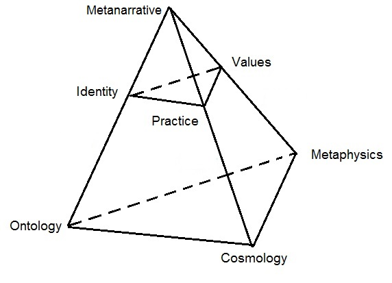

1.1 SW Definition
The alien
Far away in the galaxy, there's a species of aliens who believe in a vast multiverse, filled with an infinite number of
worlds; they live in just one. These aliens have a special ability to teleport to other worlds. The process seems
simple: an alien must learn about a life-form from another world, think and act like it, and then, one day after falling
asleep, they wake up in that new world, transformed to fit right in.
However, this unique way of traveling has a big downside — amnesia.
The farther away they travel, the more they forget who they
are and where they came from. This loss of memory is a major problem because to get back home, they need to know
both where they are and where they originated from.
Without this crucial knowledge, they find themselves stranded in the new world.
One such alien has teleported himself (perhaps, by an accident) to Earth — a planet made of rocks and magma,
covered by a thin layer of soil,
water, and gases, orbiting a young star in the cold expanse of space. This planet teems with diverse life forms, which
the alien refers to as shape-shifters because of their constant physical transformations.
Their bodies grow by absorbing
elements from their surroundings until they reach a certain size and then disintegrate into atoms and molecules scattered
across the planet, to be mixed with other materials, and eventually aggregated into new beings. This perpetual cycle of growth and
disintegration repeats continuously and never stops on this planet.
Unlike the alien, the natives cannot survive in the vacuum of space or travel across galaxies; they are bound to this planet.
One type of these shape-shifters, known as humans, has developed the ability to transform simple abstract concepts into
tangible forms. They design and construct buildings, machines, and social structures, and consider themselves to
be a highly advanced species, superior to all other life forms on the planet. For some reasons they thinks
they are much better than monkeys, another group of shape-shifters that has only recently begun to exhibit similar
capabilities.
Despite their achievements, humans are largely unaware of the vast expanse of knowledge that remains undiscovered. They
have no idea how little they actually know, nor can they anticipate how much there is yet to learn. It remains an open
question who will access this hidden knowledge first — humans, monkeys, or perhaps another species altogether.
Anyway, now he is one of them. Due to the amnesia, he doesn't clearly remember his
past, but he feels a deep sense that he doesn't belong on Earth and that he must eventually return home. To make this
possible, he needs to determine his current location and remember where he came from.
To start, the alien gathers information about Earth and its residents. He learns about particles, the void, and the
physical laws of the universe from physics textbooks. A priest shares insights about miracles and the divine aspects of
human nature. A general talks about honor and duty. Meanwhile, children from a nearby school suggest
him to write a letter to Santa Claus, believing that Santa might perform a miracle and help him get back home.
The alien must discern which stories are likely
to be true and which are not. He recognizes some universally acknowledged truths across all communities, such as not
crossing the street on a red light, washing hands before eating, and objects falling when dropped.
However, beyond these straightforward truths, he encounters stories that contradict each other. Some of these
contradictions can be resolved by viewing the stories as complementary, addressing different aspects of the same world.
For example, the general's emphasis on honor and duty might align with both the scientific and religious narratives.
Yet, the narratives from the scientist and the priest are more challenging to reconcile, particularly when it comes to
human nature. Both science and religion claim the authority to define, explain, and manage human nature, providing
vastly different perspectives on what it means to be human, human's origins, and human's purpose. These differing accounts
represent a significant point of contention he must navigate.
The questionary
The alien realizes that the narratives of science and religion cannot both be entirely true. This means he either
lives in a world governed by scientific principles or one defined by religious doctrines (and there are so many of them).
It is so easy to drawn in this ocean of various teachings. To make progress the alien decides on a structured approach and sets up a series
of checkpoints to test these teachings rigorously:
1. **Self-consistency**: The alien looks for narratives that provide a coherent description of the world. While no story
he's encountered is without flaws, and all exhibit some inconsistencies, he finds that some are significantly more
coherent than others. This coherence is a crucial marker of a narrative's potential validity.
2. **Empirical validation**: He tests the stories against observable and measurable evidence. For example, if a
narrative claims an apple is on a tree, but he sees no apple, he considers the story likely false. This reliance on
empirical evidence helps him ground the narratives in observable reality.
3. **Experimental testing with time manipulation**: Possessing a time machine that can accelerate time, the alien uses
this tool to test spiritual and transformative processes, like achieving enlightenment through Buddhism, in just a few
hours instead of years. This unique method allows him to rapidly assess the efficacy of practices that would otherwise
take a lifetime to evaluate.
If these initial methods fail to conclusively verify a story, the alien employs additional, somewhat subjective but
still valuable, criteria:
4. **Credibility of the source**: He considers the reliability of the person or entity providing the information.
Stories from known unreliable sources are deemed less trustworthy.
5. **Historical persistence**: The alien values stories supported by historical documentation more than recent
creations. The longevity of a narrative or practice often lends it greater credibility, suggesting its resilience and
relevance through time.
6. **Community endorsement**: Finally, he assesses the breadth of a story's acceptance. A narrative believed by a large,
diverse community is considered more credible than one upheld by only a few individuals.
7. **Predictive Power**: The predictive capabilities of scientific theories are scrutinized, assessing their ability to
accurately forecast future observations or phenomena. Similarly, the predictive prophecies or promises made within
religious texts may be assessed for their fulfillment or accuracy.
8. **Ethical Framework**: The moral and ethical frameworks presented by both science and religion are examined for their
alignment with universal principles of justice, compassion, and fairness. The alien evaluates whether each worldview
promotes values conducive to harmonious coexistence.
Through this multifaceted approach, the alien aims to sift through conflicting narratives to uncover which—if
any—accurately describe the world he currently inhabits.
Indeed, these check points help him to identify certain narratives as belonging to the realm of
fantasy, never to be mistaken for genuine truth. For example, the tale of Santa Claus (SC), exhibits several
characteristics indicative of its fictional nature.
1. Firstly, the story of SC starkly contradicts common knowledge derived from everyday experiences. The absence of any
documented sightings of flying reindeer casts doubt upon the plausibility of the narrative. Moreover, the storyline
violates fundamental principles of physics, such as mass conservation and the finite speed of movement.
2. Furthermore, empirical evidence such as satellite imagery and video recordings, fails to corroborate the existence of
SC or his alleged activities at the North Pole. Instances of fraud committed by adults fooling their kids and captured by
surveillance cameras during Christmas
festivities only serve to compound the skepticism surrounding the narrative.
Drawing upon this wealth of evidence, the alien arrives at a tentative conclusion, acknowledging the high probability,
though not absolute certainty, that the story of SC is indeed a fabrication. Initially perplexed by the festive fervor
surrounding Christmas celebrations in certain societies, the alien eventually recognizes these customs as mere social
conventions, devoid of any objective basis in reality.
So far, so good. However, distinguishing between the complex worldviews of adults is a more challenging task. To
accelerate his investigation, the alien creates a short questionnaire designed to capture the key elements of
teachings aiming at the description of the whole world:
1. **Ontology**: What does this world consist of?
2. **Cosmology**: How does this world function?
3. **Metaphysics**: Why does the world function in this way?
4. **Identity**: Who are you?
5. **Practices**: What do you do?
6. **Values**: Why do you do it?
7. **Metanarrative**: What is the overarching story?
These questions aim to provide a concise overview of the key components that make up each worldview.
Figure 1.1 provides a schematic representation of this questionary.

Figure 1.1 Schematic representation of the questionary
The first question in this questionnaire, dealing with ontology, aims to list and explain the fundamental components of
this universe. While an exhaustive description is not feasible, and some elements might remain obscure until further
elaborated in subsequent sections, this section is meant to lay down the key elements:
a scientist might describe the world as
composed of atoms and voids, a religious person might see it filled with divine entities and miracles,
and a general could view it in terms of alliances and potential threats.
The next part, concerning cosmology, is
about the interaction and evolution of the elements introduced in the ontology section, explaining how people and their
environment influence each other over time.
The third question focuses on metaphysics, querying why this particular universe description was chosen over any other.
These initial questions primarily explore the external world. The subsequent three questions touching on
identity, practices, and values, narrow the focus to specifically human concerns.
The "Identity" question probes the notion of human nature, or whether such a entity exists at all.
The practices question seeks to clarify what actions people in this universe typically engage in and what behaviors are
considered appropriate or inappropriate.
The values question attempts to establish what is regarded as morally good or bad, adding a layer of ethical judgment to
the otherwise neutral descriptions of the self and the universe.
The concluding section, the metanarrative, weaves all the previous responses into a single, cohesive story about the
individual and the world. Without this overarching narrative, the questionnaire risks being a collection of disjointed
stories with little coherence and infested with contradictions. The metanarrative serves to unify these narratives,
smooth over any apparent contradictions, and offers one interpretation among many possible others.
Disguised as a social scientist, the alien approaches random people on streets, asking them to provide concise
responses (no more than one page) to his questionnaire. Surprisingly, most respondents, except professional
philosophers, are able to provide answers and craft short narratives describing their universe and themselves.
Despite being vague and imprecise with details and using poorly defined terms, these narratives are more or less
coherent and tell some sort of story. As for the philosophers, they often stumble at the first question, hindering
their progress on subsequent inquiries.
The alien then organizes these stories into distinct categories that represent different communities such as scientists,
priests, and warriors. He begins to suspect that these narratives may reflect parallel worlds that people have either
inhabited or can somehow perceive. He labels the collection of stories from a particular community as a "Storied World"
(SW).
Comments on Storied Worlds
It might seem natural to view the metanarrative, which weaves the responses from the questionnaire into a single
comprehensive story, as the ultimate goal and the most significant outcome of this project. This could lead to the
assumption that once the metanarrative is established, the individual responses to earlier questions can be disregarded.
However, this perception is somewhat misleading. The diverse collection of stories generated by people's answers to
specific questions is just as crucial as the overarching metanarrative that emerges from these stories. Indeed, it might
be more accurate to consider the metanarrative as just another narrative within this collection, rather than the final
or definitive product of the questionnaire.
The collection of stories generated by the questionnaire cannot be simplified into a single narrative for several
reasons. Firstly, there isn't a direct one-to-one match between the questionnaire and any metanarrative that might be
derived from it. With a rich background of diverse stories, multiple metanarratives can be crafted, each offering
different interpretations or emphases. A single metanarrative cannot encapsulate the full range of stories produced by
the questionnaire. Thus, discarding the individual responses after creating a metanarrative would result in a
significant loss of information. This would be akin to replacing all scientific literature, encompassing various
theories and perspectives from different scientific schools, with a single mainstream teaching ignoring competing
theories and
hypotheses. Such an approach would overlook the richness and complexity inherent in the multiple viewpoints and reduce
the depth of understanding.
Secondly, the collection of stories derived from the questionnaire represents a dynamic body of knowledge that can
expand and evolve in numerous ways over time. In contrast, a single story or metanarrative is by nature a complete and
static entity. It typically has a clear beginning, middle, and end, resembling a biography that starts with birth,
progresses through life, and concludes at the grave. Any sequel would inherently be about a different subject; the
original protagonist's story is completed.
On the other hand, the anthology of stories from the questionnaire is perpetually open-ended. It's never truly complete
and has the potential to grow indefinitely. While the foundational materials provided by previous contributors may guide
new developments to some extent, the overall structure is so rich and multifaceted that it can readily incorporate
fundamentally new stories. This ongoing, ever-evolving nature ensures that the body of stories remains vibrant and
adaptable, reflecting new insights and perspectives.
Each question in the questionnaire doesn't demarcate a strictly isolated area of inquiry. Rather, the answers to
different questions often overlap. For example, in some narratives, such as those found in Buddhism, cosmology and
psychology are so intricately intertwined that it becomes nearly impossible to separate the two. As a result, a
description of cosmology remains incomplete without incorporating elements of psychology, and understanding psychology
necessitates some explanation of cosmology.
Unlike a single narrative that requires internal consistency, a collection of stories can encompass a variety of
narratives that may contradict one another. These contradictions within the collection do not undermine its value;
rather, they enhance its flexibility and capacity for adaptation. This diversity allows the body of knowledge to remain
open and responsive to new developments, as it can accommodate a wide range of perspectives and insights. Thus, the
ability to include conflicting narratives makes such a collection a more dynamic and versatile repository of knowledge.
Historical examples of such collections of stories include the Vedas, Buddhist texts, the Bible, and
scientific literature. These
narratives can be passed down orally from one generation to another, written on paper, or stored digitally on the
Internet. No matter how they are expressed, these collections are characterized by their irreducibility; no single
narrative, including a metanarrative, can fully encapsulate the entire subject matter.
These collections often contain redundancies that may lead to contradictions, reflecting the contributions of multiple
authors rather than a single voice. The process of creating these stories is not confined to a brief period but can span
centuries or even millennia, evolving over time as they are shaped by countless contributors. This extended and
collaborative nature of storytelling adds depth and diversity to the knowledge contained within these texts, making them
rich resources for both contemporary and future generations.
A key feature of such a collection of stories is its conceptual completeness, meaning it possesses the resources
necessary to evaluate the truth value of any statement. This completeness ensures that any inquiry concerning the self or the
universe can be appropriately addressed within its framework. While not every question may receive a definitive answer,
the crucial aspect of these collections is that they offer a conceptual background capable of addressing any question,
regardless of the specific vocabulary used to express it.
This ability to accommodate and process diverse inquiries makes these collections incredibly valuable. They provide a
comprehensive platform where various perspectives and interpretations can be considered and scrutinized, contributing to
a deeper and more nuanced understanding of the world.
The size and scope of such collections can fluctuate over time. For example, the volume of scientific knowledge today
far exceeds what was available just a few hundred years ago. Additionally, the extent to which this knowledge is
internalized varies significantly among individuals and even within the same person at different stages of their life.
This variability in knowledge acquisition reflects not only the dynamic nature of information growth and change but also
individual differences in learning, interest, and capacity. It highlights how personal and societal growth in knowledge
is not static but continually evolving, influenced by educational opportunities, cultural shifts, and technological
advancements.
On the method
Because of the all-inclusive nature of the Storied World, the method of dealing with such a complete body of
knowledge has some
peculiarities. According to scientific method, you formulate a hypothesis, test it against established knowledge and
then depending on the outcomes of that test either accept or reject that hypothesis. In our all–inclusive collection of
stories the body of the hypothesis comprises the whole world, and hence no knowledge is left beyond that body to test it
against. In other words, there is no such thing as established knowledge residing beyond that storied-world (which itself is our
hypothesis), and if one storied-world contradicts another, there is no reference point beyond the body of the hypothesis
to establish its truth value. Unless, of course, we are prepared to postulate some privileged knowledge and methods of
dealing with such knowledge. And if we do, these privileged methods and knowledge,
once established, must be taken for granted and never questioned afterwards.
Consider as an example the story of the “Big-Bang”. According to many religious teachings
this story does not make sense. On the other hand, it makes perfect sense within the scientific interpretation.
In either case the truth value of that story is assessed against a larger body of knowledge formed by a particular SW.
To assess the truth value of different stories from the vantage point of some “impartial” observer (not
attached to any particular SW), this observer would have to step outside of every possible SW.
However, no Storied World implies no language and, hence, no principles whatsoever to guide our decisions.
If we don’t want to succumb to the existential vacuum here, we have to postulate rules, perhaps, grounded
into some minimalistic collection of stories, upfront. These rules are needed to provide us criteria to rank other
stories (see Gadamer’s “Truth and Method” for in depth analysis of this subject).
So, what kind of rules we may implement in order to evaluate different storied-worlds?
1. To start with, we may require Storied Worlds to be represented by self-consistent collection of stories (otherwise
we can not comprehend them).
2. It would be nice also for these stories to be consistent with an empirical
evidence (so that we can verify them through practice).
3. We may want also to add rules pertaining to ethical principles, or referring to our quality of life,
or the notion of sacred, etc.
A complete collection of such rules shall provide criteria to rank existing
storied-worlds. The same rules would be used to channel the development of new storied-worlds (by imposing
constraints on the kind of the worlds we can to create).
Why did I choose this particular set of rules rather than some other set?
I can explain it with the reference to some aesthetic considerations or quote an “unreasonable efficiency” of the
logically-consistent bodies of knowledge or highlight the quality of life and importance of human beings.
But then other people may argue that we
shall consider only those stories and rules which promote the well-being of cats, because cats are important and
this fundamental truth is hardwired into the human nature and they can feel it etc.
It is very hard to argue with a human nature. To save time and energy, I just cut it here and postulate the
aforementioned principles guiding the development of new
stories. I believe, these principles are sufficiently general to let us analyse and develop a rich variety of new SWs, on
the one hand, and, at the same time they are sufficiently constraining to eliminate unwanted entries. I will elaborate
further on these principles through chapters 1 to 3 to make them more structured and convincing.
The critical point to remember,
however, is that the rationale behind them is never watertight. There is always place for an alternative set of rules
that would provide other means for ranking different storied-worlds. On the other hand, the choice is never completely
arbitrary. To be sustainable, a SW must respect at least some norms of ethics and be consistent with the laws of
physics. In other words, vocabularies do not exhaust the whole world. There are practices and experiences that transcend
stories and open the door towards other realities in our lives which surpass linguistics and may provide extra anchoring
points to justify our vocabularies.
Contradictions
Both humans and aliens value the communication of their experiences through self-consistent, coherent stories, which
narrow down interpretations to what we commonly accept as truth. In a self-consistent story, humans and aliens starting
from the same premises arrive to the same conclusions.
From the management perspective having one single description of the world helps to decide the best
course of actions. Coherent stories also help people to communicate with each other - if a story is
inconsistent we often say it does not make sense.
Yet, stories we tell about ourselves and the world around us are often infested with contradictions. The degree of
the logical cohesion present in these stories and the attitude towards contradictions varies from one storied-world to
another. In some teachings (e.g. science) contradictions are introduced pests to be eradicated - the smaller the
number of contradictions the better the theory. On the other hand, in many religious schools (e.g. Zen Buddhism,
Taoism), a contradiction is a critical and irreducible part of the teaching - get rid of all contradictions
and the teaching is gone.
The exact meaning of the word contradiction depends on the context. It could be referring to
contradictions between two statements (e.g. one statement saying “this is
white”, and another statement saying “this is black”), contradictions between theory and experimental evidence (theory
says “this is white”, but we can see it is black), contradictions between intentions and reality (he wants to maintain
healthy life-style but smokes), contradictory psychological states (love and hate the same person),
contradictions in social life (individual vs collective goods) etcetera.
The ubiquitous nature of contradictions in our lives has been vivdly expressed by Paulo Coelho -
“we are in such a hurry to grow up, and then we long for our lost childhood. We make ourselves ill earning
money, and then spend all our money on getting well again. We think so much about the future that we neglect the
present, and thus experience neither the present nor the future. We live as if we were never going to die and die as if
we had never lived.”
A succinct definition of the contradiction that would serve our purpose reads:
two statements are contradictory if we cannot believe in both.
Summary and concluding comments
Ideally, the alien would prefer clear, black and white answers to his questions, which would allow him to easily
distinguish between false and true descriptions of the world. However, he soon realizes that the reality is far more
complex. Instead of a clear demarcation between truth and fiction, he encounters varying degrees of plausibility.
The alien discovers that none of the criteria intended to sift through the narratives and isolate a single truth is inadequate.
For example, while each narrative presents
itself as logically coherent story, none are entirely without flaws — each has inconsistencies and imperfections. Moreover, for
some narratives, contradictions are not just present
but are an essential, integral part of the story.
The alignment of stories with empirical evidence is not straightforward either, as the selection of evidence itself is
influenced by what people believe and practice.
Experiments with time machine illustrate how individuals absorb and reflect the beliefs and convictions
of their own cultural contexts. This in turn suggests
that the source of knowledge, its endurance over time, and community endorsement are all factors that shape belief
networks, yet these alone do not yield definitive answers.
Despite these discouraging findings, the alien remains hopeful about discovering principles to distinguish between real
and imaginary worlds. To deepen his understanding, he retreats to a library, immersing himself in science and philosophy
texts.
Years of rigorous study yield mixed results. On the one hand, he is disheartened to find that, despite humanity’s
significant progress, major gaps persist in their understanding of reality, knowledge, and ethics (see Appendix D2 for
details). Fundamental questions remain unanswered, and intrinsic barriers hinder further exploration of these mysteries.
On the other hand, these limitations open an opportunity for the alien to forge his own solution. Rather than relying on
established definitions of "real world," he can construct a new one. His preliminary insights suggest that this
definition should be broad enough to encompass a diverse range of teachings within a unified framework — something akin to
a multiverse. He recognizes that many of the stories he has encountered so far merit being called "real," yet contradictions
within and between these narratives demand resolution.
This new definition must be both coherent and intuitively satisfying—one he can genuinely embrace.
Beyond these aspirations, he remains open to wherever this intellectual journey might lead.
With this vision in mind, the alien sets out on the ambitious task of defining criteria for the real worlds - the
narrative to unfold in the next chapter of this manuscript.
Ideally, the alien would prefer clear, black and white answers to his questions, which would allow him to easily
distinguish between false and true descriptions of the world. However, he soon realizes that the reality is far more
complex. Instead of a clear demarcation between truth and fiction, he encounters varying degrees of plausibility.
The alien discovers that the criteria intended to sift through the narratives and isolate a single truth are inadequate.
The first checkpoint, which examines the coherence of a story, illustrates this problem. While each narrative presents
itself as logically coherent, none are entirely without flaws—each has inconsistencies and imperfections. Moreover, for
some narratives, such as those found in certain religious or philosophical systems, contradictions are not just present
but are an essential, integral part of the story underpinning miracles.
The alignment of stories with empirical evidence is not straightforward, as the selection of evidence itself is
influenced by what people believe and practice.
Experiments with time machine illustrate how individuals absorb and reflect the beliefs and convictions
of their own cultural contexts. This in turn suggests
that the source of knowledge, its endurance over time, and community endorsement are all factors that shape belief
networks, yet these alone do not yield definitive answers.
Despite these discouraging findings, the alien remains hopeful about finding principles that would help him to
differentiate between real
and imaginary worlds. To explore the vast expanse of scientific knowledge, he locks himself in a library
diving into science and philosophy textbooks.
It took time and effort to go through these materials, and the results were mixed. On one hand, he was disappointed to
discover that despite all human progress, there is still a limited understanding of themselves and their surroundings.
Humans lack clear answers to fundamental questions about reality, knowledge, and ethics (for more details, see Appendix
D2). Furthermore, there are fundamental barriers preventing them from acquiring such knowledge.
On the other hand, these knowledge gaps give the alien an opportunity to explore and create his own solutions. Instead
of relying on the established definitions of what is "real", he can produce his own definition. Preliminary insights he
gaining from an early exploration, tell him this definition should be general enough to accommonage
and range of different teachings under the same ambrella framework - some sort of a multiverse, he feels that
manuy stories he is aware of deserve to be called real. On the other hand, contradictions within and across
these teachings must be addressed somehow. He wants thus definition to be more or less cogherent and intuitevaly
appealing, so that he can believe it. Other than that, he is open for any sort of definitions.
With this in mind, the alien embarks on the project of establishing his own definition of what is real and what is not - the
first building block of his narrative to be discussed in the next chapter of this manuscript.
Back Home Next